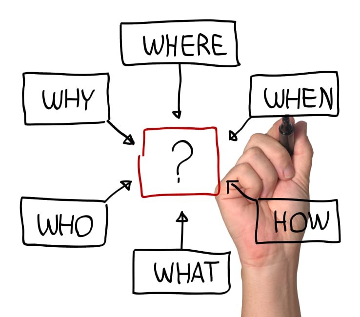
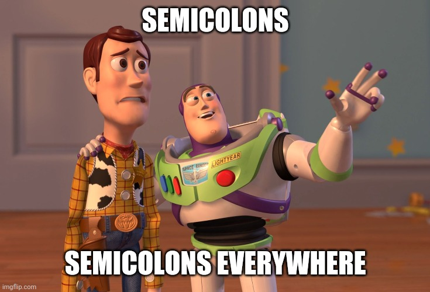

Understanding SONET
SONET = School of New and Emerging Technologies is a program that college offer to the students courses on some techs like Web development, Machine Learning etc depends on the particular year and may add few more courses. Ultimately these are thought very keenly and you have to give your maximum efforts. These are not part of the academics, no marks counted in the sem. Great for Self Improvement. These are helpful when you are implementing projects.
Intuition to College Life
In College you will be thought of all required technologies like in the first-sem C language, then next sem - Data Structures in C++, then mySQL(DBMS), Java, OS, CN etc. Teachers will teach you in OU Syllabus format. Don't just relay on the academic syllabus. GO out of the scope and work, You have to make your plan on how you gonna study and excel them.
Finally College Syllabus will consist some portion of knowledge for various different subjects which is insufficient for the IT industry. So it is dependent on you, to learn all the necessary skills before giving placements. Finally, I want to say that Self Learning is the best way to grow.
Understanding the Campus Placements
Every Engineering institute will have a placement office in their College. These officers partner with various tech companies who wish to recruit students from the College. In Simple words these people are inteface/medium of communication between the students and the companies.
Okay lets Dive in. Recruiting companies can broadly be categorized in to 2.
1) Product-Based and
2) Service-Based.
#Product-based: here you will work on company's products only. Why? to improve its product day to day and for its maintaince. Ex. Google, Facebook, Amazon, etc.
#Service-Based: as the name Service, here the client approaches the company for a specific software and the company makes sure to deliver the software according to the client wish in a period of time. Ex. TCS, Infosys, Wipro etc.
Placements have some rounds (depends on the company and may change from time to time). Anyway this doesnt matter. So to the role of Software Engineer you will be competing. So at starting you will be having test that will probably have MCQs and Coding Questions. So basically the syllabus will be from Data Structures, Algorithms (these two are Heart of CS), Operating System, Computer Networks, DBMS and may be some more. But these most important. And DS Algo, there is no CS interview without these two. Keep track of it and practice Efficiently.
Want to Start What?, How?, Where?
Whats the picture
So at the beginning everyone of us dream big. We join in the college with big hopes, dreams, and what all. Many of them achieve and some may not. Engineering makes us learn the way of living in a Society. Here in college you'll see many different characters, some amazing minds, some creative minds and some talkative lol etc. You get matured, and also get exposed to the reality of the society, it may be in both good and bad.
Whatsoever, its over you have taken Computer Science. Now dont relax until you gain the correct Knowledge of it. Many say CS is easy than all other branches. This statement is partially correct. Yes it is easy because with efforts, you might land up in a good software job with a nice package (there is a good number of opportunities in the CS field). But when you go with in depth knowledge of CS (if at all you want to explore more) then the real game starts. I would not say any of the branch is high or low. I believe each branch has its own speciality. Its you who make the things matter.
CS is Logics only. You have to use your brain. Imagine why software jobs have high salary?, as they work using their brains. Mental work is paid more than Physical work. (not to offend anyone. Everyone has their own profession, either due to certain circumstances or on their wish)
How to start
- Select a programming language - as beginner 'C lang' probably and get used to it
- Once you have good command over the syntax and concepts start solving Problems
- Practice, practice and practice.
- Start solving problem on online coding websites like
- If you wish you can also parallely learn basic web technologies like html, css, js etc. Infact this website if made using these techs
Here i had mentioned C lang instead of python because.. Guys C language is the basic fundamental language and having a good logic command over this one will make easy when you are shifting to other languages like cpp, java.(java is again recom after cpp). Its the way that has been followed over since years. But none the less it is not that you have to follow tha same. Its you choice if you wish to go with python you may go.
In simple, In C we get to know the logics in Depth. Whereas in Python there will be an Abstract view (hide/masks) to the logics. Python is most preferred and used in Machine learning programs as the code can be smaller and easier to read and Understand.
Shifting from Python to other lang may take more time, but shifting from c->c++/java to pyhon is bacchha..
Where to
The main purpose of this bullshit website is this only. I wanted to share resources which are pretty simple and beginner friendly. Probably depending upon the time, i may share few more tips and tricks which may be useful in your learning.
So go to the Recourses tab and you will find the links. All the things i have mentioned are beginner friendly and it shouldn't be that difficult to complete them. Hope You Got atleast some Essence of What CS is and How to things work.
‣‣‣ Once started learning programming, Maintain Consistency.
“ At starting everything will be small small dots. But as you keep on moving forward, each and every dot will be connected and things will be slowly understandable by you. So all the best :) ” 😉